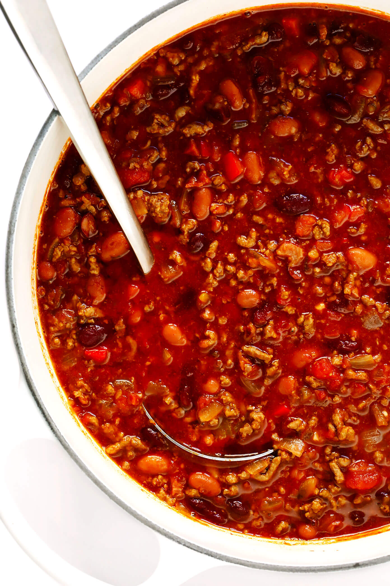

Chili

Description
This chili will warm you up on a chilly afternoon, and keep you going all day.
I left out quantities as this recipe is very verstile and forgiving.
Ingredients
- olive oil
- chli spices
- onions
- garlic
- celery
- beef
- canned tomaotes
- black and kidney beans
- corn
- tomato juice
Steps
- Heat olive oil in a cast iron skillet (add enough to generously cover bottlom of skillet
- Add your chili spices to oil and wait for it start to smell good
- Add onions, garlic and celery and cook till soft and aromatic
- Now scrape them all into a slow cooker
- Return skillet to heat, add beef, and cook till brown
- Scrape beef into slow cooker
- Return skillet to heat, deglaze skillet, and add drippings to slow cooker
- To the slow cooker, add canned tomatoes, beans, corn, anything else you like in your chili
- Add tomato juice until all ingredients are covered
- Put lid on slow cooker, and set it to low, or high, dependingn on when you want to eat
- When it smells good, eat it over mashed potatoes (trust me)
Happy Fixing Fun Things to Eat
Return to main page